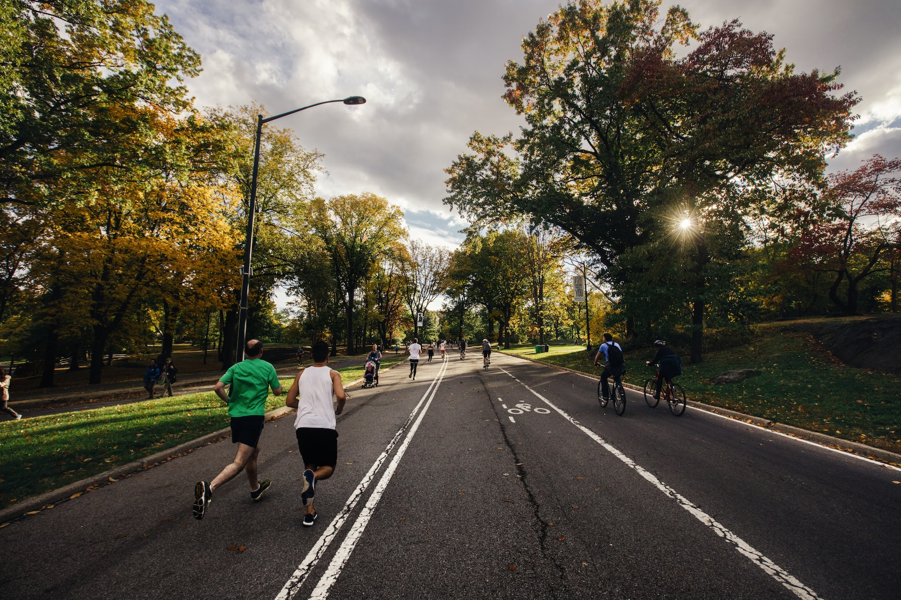
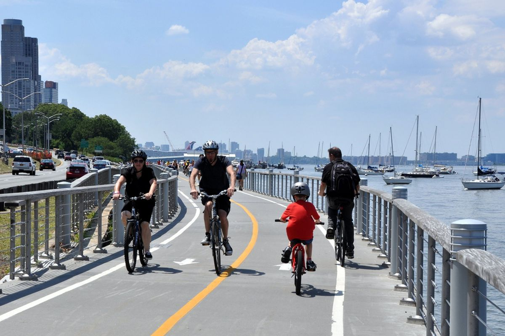
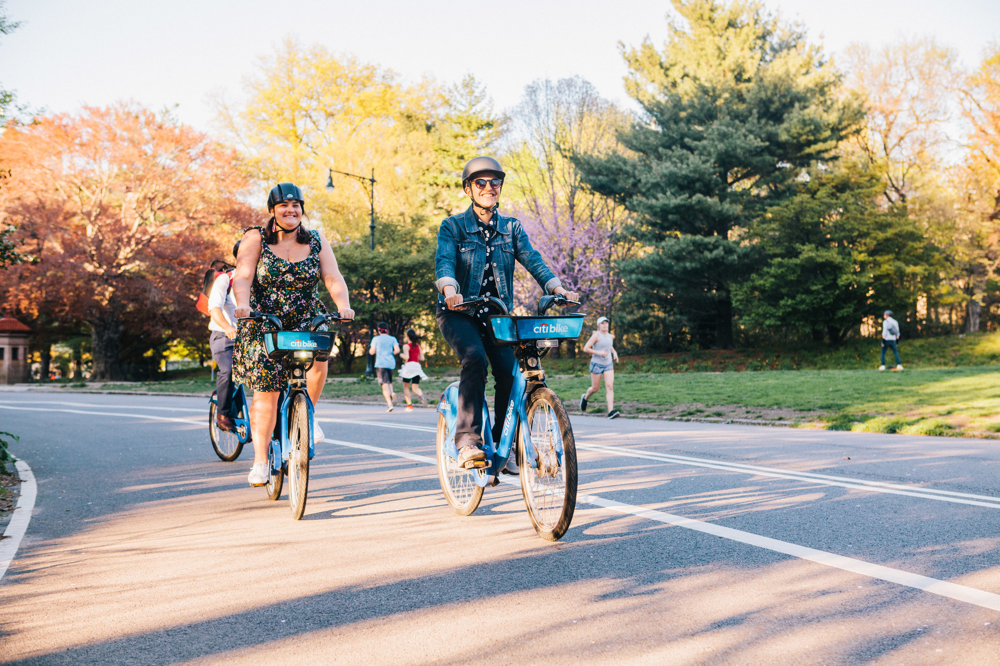

Routes

Enjoying a ride in New York is largely about knowing the right routes. Luckily there are many good ways to get around and out of the city. Specifically, I will explain three routes around the city and one leaving it.
To the left is a heat map (credit Strava) of where people cycle around Manhattan and Downtown Brooklyn. As can be seen, the most common routes are in Central Park and on the Bridges.
Photos



Descriptions
Listed by distance:
- Central Park - A simple and classic ride and thirty minute epoch, this ride involves circling the Central Park Loop. I recommend starting at the 72nd street entrance and going around as much as you want. It measures about six miles.
- West Side Highway/West Village - Starting from Inwood in Manhattan, you can bike south until you reach the Whitney Museum. Then, going from Horatio to Hudson to Bleecker to East Second, you can get to the Brooklyn bridge while getting a good view of the west village. (About 12 Miles)
- Secret Prospect Park Jumps - A bit hard to find and in prospect park. I will say no more.
- Palisades Parkway - One of the longer rides, one can get to the Palisades by crossing the bike path on the George Washington Bridge. Once you have made it across the sharp turns and thin on-wramps of the bridge, you will find yourself surrounded by trees and with a view of the river. If you are looking for a long ride, you can go to the Tappan Zee Bridge and go back south through Van Cortlandt Park. This is about 50 miles.